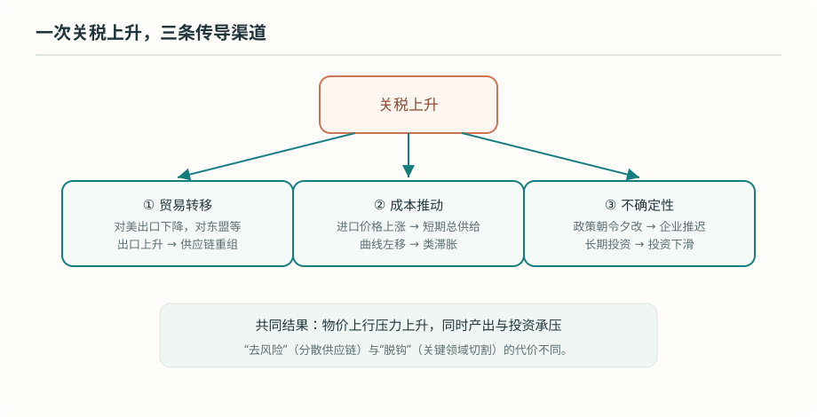
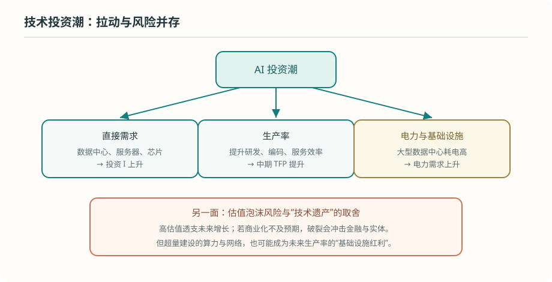
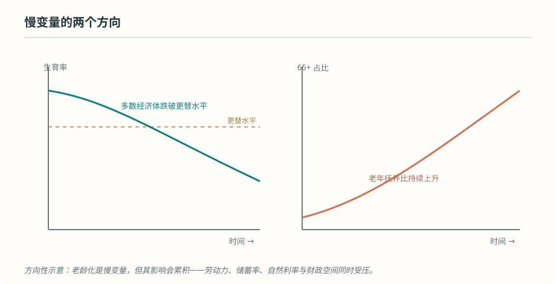

全球宏观经济热点
贸易摩擦、AI 投资、能源冲击、人口老龄化——这些看似各自独立的新闻，其实可以用同一套工具看清：把每个议题翻译成模型里的“冲击”，看它通过哪条渠道传导，再判断政策空间。本章的重点是框架，而不是对未来的精确预测。
关税冲击：三条传导渠道
如果把“贸易摩擦”翻译成宏观语言，它首先是对贸易成本的冲击。关税上升不像财政刺激那样直接进入总需求，而是通过三条渠道间接影响总量。

其中“成本推动”可以直接接到 AD–AS 框架：进口价格上涨使短期总供给曲线（SRAS）左移，结果是物价上升同时产出下降的“类滞胀”组合——这将在下一节用交互图演示。
AI 投资潮的宏观效应
AI 相关投资可以从三个渠道影响宏观：一是直接需求（数据中心、服务器、芯片与电力基础设施的建设直接计入投资 I）；二是生产率（提升研发、编码与服务效率，中期抬高 TFP）；三是电力与基础设施（大型数据中心耗电高，抬高电力需求）。

从内生增长（第 22 章）的角度看，即使一部分 AI 投资事后被证明是泡沫，它留下的算力与网络也可能降低后续创新的成本；代价是泡沫期间的资源错配与破裂后的就业损失。具体“拉动多少 GDP”“提升多少 TFP”属于情景估算，需注明假设与来源，本章不把预测当作已发生的事实。
能源冲击与滞胀
油价跳升是典型的负面供给冲击：生产成本全面上升，SRAS 左移，结果是物价水平上升（通胀）+ 实际产出下降（衰退）——这正是 1970 年代石油危机的剧情。用 AD–AS 框架可以把它写成两个曲线的同时移动。
演算：供给冲击下 AD–AS 如何形成“类滞胀”
用一组线性化的 AD 与 SRAS 方程，观察供给冲击（SRAS 左移）与需求变化对短期均衡的影响。横轴为实际产出 Y，纵轴为价格水平 P（不是同比通胀率）。所有数值为构造演算，不对应任何真实经济体。
人口老龄化：慢变量
如果说关税和油价冲击是“急性病”，老龄化则是“慢性病”：发作缓慢但不可逆转。它同时作用于劳动力、储蓄率、自然利率与财政空间。

机制上可以分四端看：增长端，劳动年龄人口减少压低潜在增长率，人均增长更多依靠技术进步；利率端，储蓄—投资均衡变化使自然利率趋势性下行，货币政策“有效下限”问题更突出；财政端，养老与医疗支出刚性增长；结构端，消费结构从“年轻型”转向“老年型”。具体生育率、占比与债务率需按联合国与国家官方数据核对，本章不引用未经核对的数值。
全球政策分化与协调
当各经济体面对的冲击类型不同（有的是需求不足，有的是输入型通胀，有的是供给冲击），货币政策目标与所处周期阶段就会错位，出现政策分化。例如：一个经济体担心衰退而温和降息，另一个担心输入型通胀而继续加息。这种分化会改变利差与套利交易的条件，从而影响汇率与跨境资本流动——因而政策分化本身就是全球金融波动的来源，而不仅是各国自己的事。
财政端也同样受挤：老龄化推升的社保支出、地缘政治推升的防务支出、气候转型所需的绿色投资，都是刚性需求。当空间收窄时，缓解债务的路径大致只有几条——加税、通胀稀释、或债务货币化——每条都有明显的代价，且具体适用取决于各国制度。
下一章是本课程的最后一章：把前二十七章的工具体系收拢起来，完成一次完整的形势诊断与政策模拟。
来源与阅读
本章以框架与机制为主，不给出未经权威口径核对的预测数值；数据请以以下官方与国际组织来源为准。